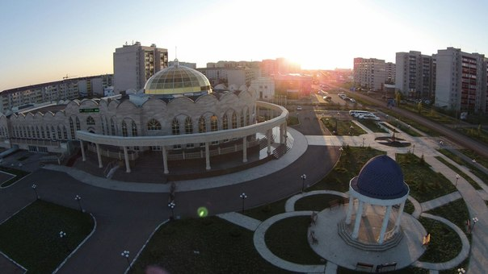

Oral/Uralsk: An Overview
Uralsk (also spelled Oral) is a city and administrative center of West Kazakhstan oblast of western Kazakhstan located along Ural River.

History
Economy
Climate
Population
Culture & Attractions
Media
Twin Cities
Reference 1: AboutKazakhstan.com
Reference 2: Britannica
Reference 3: Wikipedia